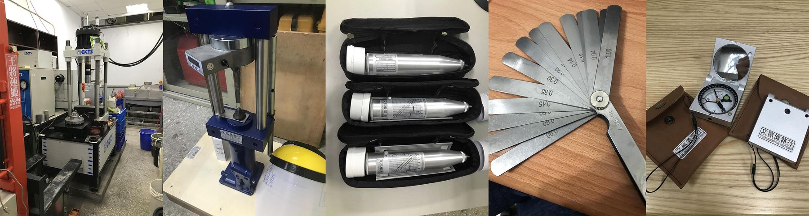
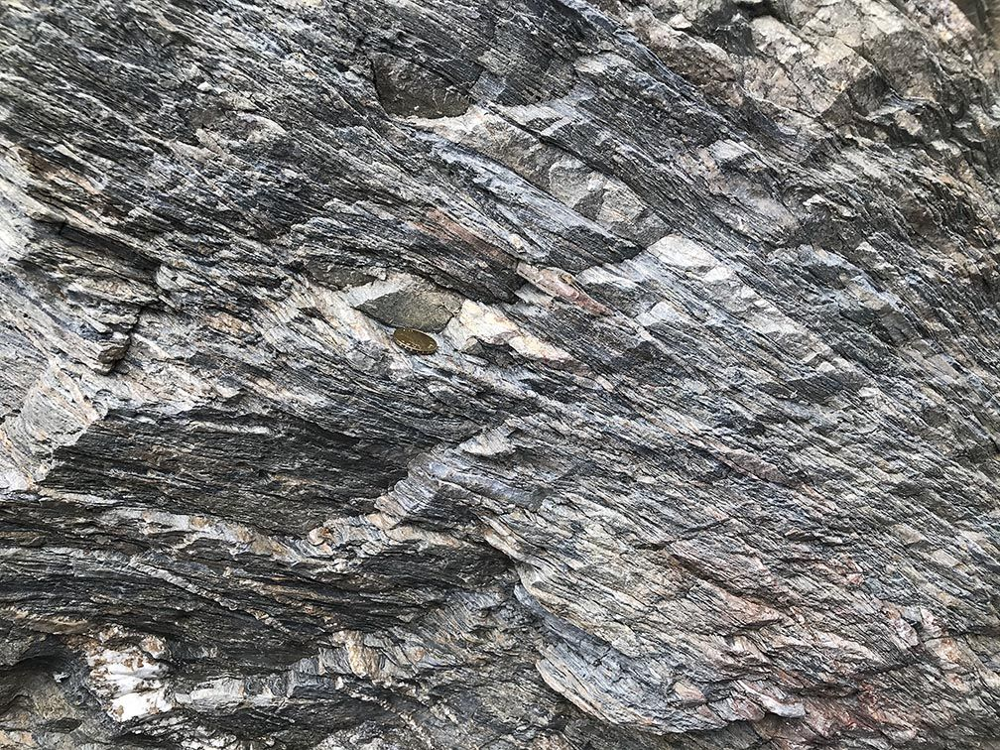
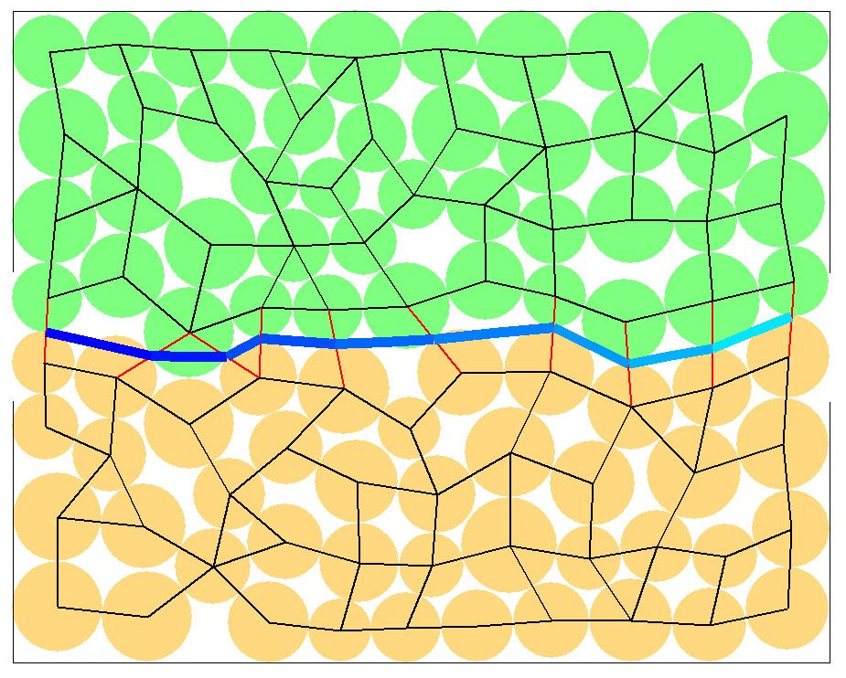
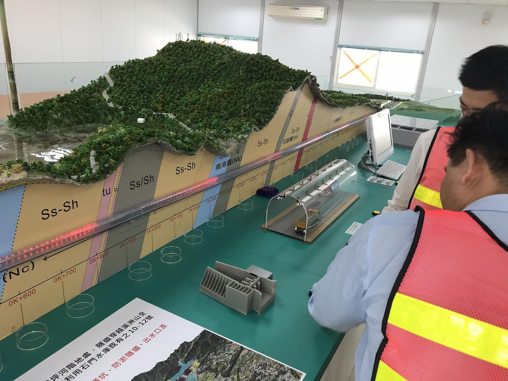
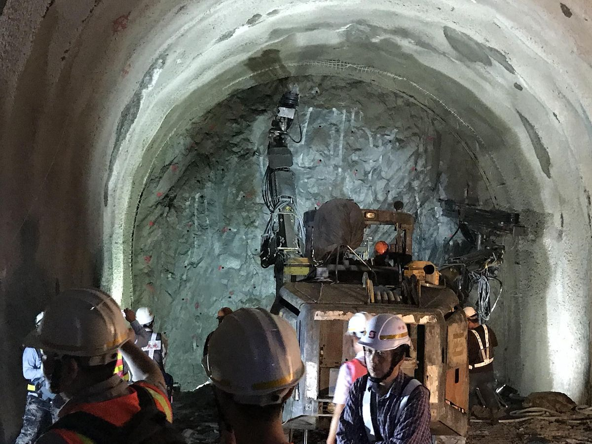

岩石力學實驗室

我們專注探究與岩石力學相關的科學議題，提升大地工程的技術，並提供資源工程更佳的解決方案。
最新消息
- 範例招生訊息：例如「115 學年度碩士班開始招生，歡迎對岩石力學有興趣的同學來信洽詢」。
- 範例研究成果：例如「○○○論文獲 Engineering Geology 接受刊登」。
- 範例實驗室動態：例如「新增○○儀器」「同學於○○研討會獲獎」「○○計畫獲科技部補助」。
研究方向

岩石力學
岩石為天然產物，力學行為迥異於一般常見人造材料。從微觀角度出發，岩石材料的晶粒排列影響了受力後的裂紋發展；自巨觀角度審視，岩體的節理面分布對其穩定性及工程行為有重大影響。因此，探討岩石的力學行為，為本研究室的核心目標。

數值分析
隨著開發需求的提升，工程設計越加複雜。傳統的力學計算方式已無法滿足實務分析所需。現今，數值分析技術已成為大地與資源工程不可或缺的利器，不僅可以透過模擬方式探討設計安全性，也能掌握可能的風險。

工程地質
大地工程必須在天然材料如岩石及土壤上興建，而天然材料的特性千變萬化，若想在自然界進行雕塑，就必須先了解地質。因此，大地工程與地質科學的橋梁－工程地質，為十分重要的研究議題。

大地與資源工程
大地工程包含的範疇很大，凡舉基礎開挖、邊坡穩定、大壩分析、隧道開挖、崩塌地調查治理等，均屬於大地工程的一部分。每個領域都與人民的生活息息相關，是與社會高度連結的產業。